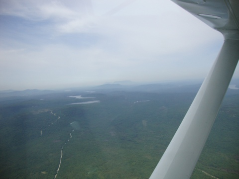
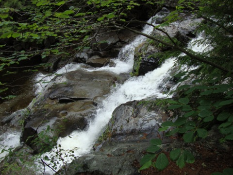
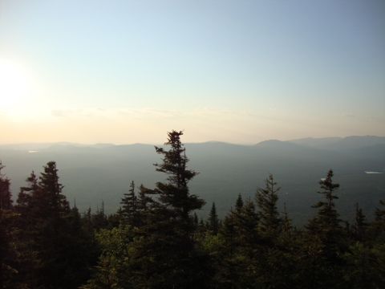
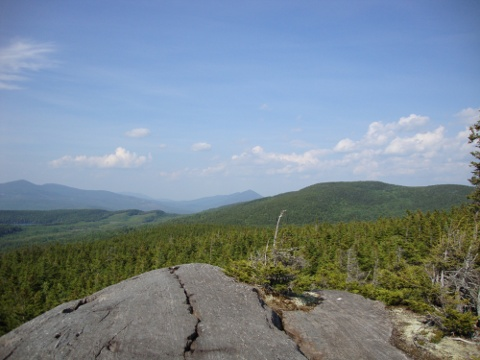
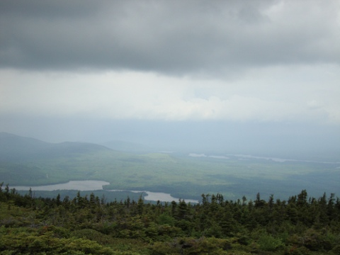
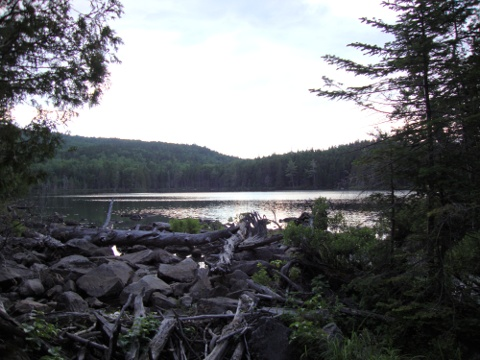
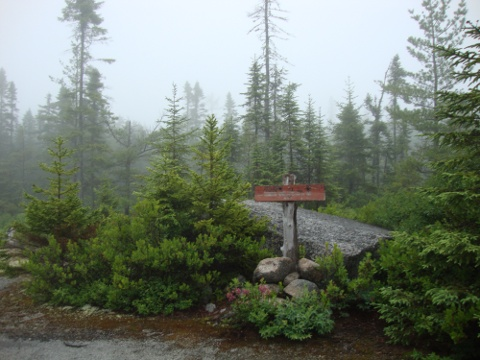
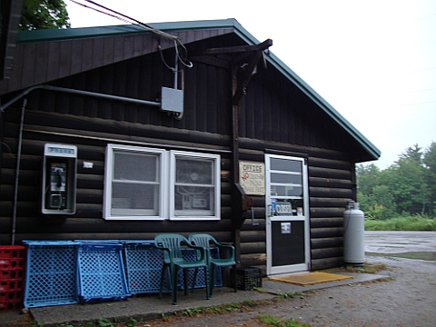

Now that the series is complete I thought it necessary to create somewhat of a master post that aggregated all of the entries more effectively. Also included are some new photographs.
- Trip planning for the 100 mile wilderness (2010-06-07 @ 22:25)
- The final countdown (2010-06-13)
- Trip report #1: The beginning through Day 2 (2010-06-28 @ 18:32)
- Trip report #2: Day 3 through Day 5 (2010-07-04 @ 15:46)
- Trip Report #3: Day 6 through Day 8 (2010-07-17 @ 00:33)
- Trip report #4: Afterward and Final Thoughts (2010-08-08 @ 23:04)
1. Trip planning for the 100 mile wilderness (2010-06-07 @ 22:25)
The series begins with an overview of gear and the trip itself. Nearly every item is catalogued and the choice to bring it is rationalized.
2. The final countdown (2010-06-13
Hours before leaving, this final post documents some last minute decisions and briefly discusses the strange mixed sensation of apprehension and anticipation.
3. Trip report #1: The beginning through Day 2 (2010-06-28 @ 18:32)
Chronicles the drive up to Maine which included a stop in Connecticut, and the first two days of the hike. Notable media includes videos and photographs taken during the flight from the northern end of the wilderness to our starting point at it's extreme southern end. By the end of the second day we realize that we are not progressing at the speed which we had counted on and had underestimated the difficulty of the trail.

Right after gaining a bit of altitude as the plane left the water

A smaller waterfall hidden behind some thick vegetation4. Trip report #2: Day 3 through Day 5 (2010-07-04 @ 15:46)
Zach's condition deteriorates as we continue to face the rough terrain in the Barren-Chairback range. I leave Zach alone on the morning of the fourth day to face the rest of the hike alone. Spectacular photographs from White Cap Mountain and its surrounding peaks. The fifth day includes 19 miles and five peaks which inflicts damage to my already damaged feet.

Awe-inspiring sunset from the top of Barren Mountain

One of many smaller peaks in the Barren-Chairback range5. Trip Report #3: Day 6 through Day 8 (2010-07-17 @ 00:33)
I pay a visit to an infamous wilderness camp known as White House Landing. After leaving the camp, I aim to finish the remainder of the trip in two days. Without doubt, these were the most mentally challenging hiking days I have ever experienced. After eight days in the wilderness I emerge from the woods to find myself at Abol Bridge.

Maine: Lakes, mountains, and trees

Sunset over a quaint pond

The ethereal mist encountered on the final day of the hike6. Trip report #4: Afterward and Final Thoughts (2010-08-08 @ 23:04)
After more than a month has passed since the completion of the hike I wrote this final post that reflects on the events of the trip. Originally intended to be a gear assessment, I decided to make it much more story-driven and reflective of things I experienced on the trip. Completes the series.

No skittles here